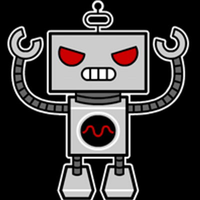

Research Mission
The motivating research question we aim to explore is: “How do we get working programmers to actually adopt better
practices”? Overall, our research goal is to improve the behavior, productivity, and decision-making of software engineers.
As researchers in Code World, No Blanket, we aspire to make contributions to the field of software engineering (SE) by engaging in impactful and outward facing research that is practical, has real-world implications, and is relevant to the experiences of developers.
Our research approach empirically analyzes development practices to characterize software engineering problems, incorporates interdiscplinary concepts to study and enhance the behavior of
software engineers, and builds novel automated tools and techniques to increase developer productivity and help programmers overcome SE problems. We conduct experiments involving
qualitative and quantitative methods with the goal of producing results to support programmers in their work, whether they are students, open source software hobbyists, or professional software engineers in industry.
Current Projects
Examples of software engineering (SE) problems we are currently exploring include:

|
DEVELOPER BEHAVIOR
Software engineers are frequently faced with decisions in their work, and the choices developers make have a major
impact on the technology we use everyday. Unfortunately, programmers often make bad decisions and avoid beneficial behaviors such as adopting development tools, refactoring,
testing, and adhering to security guidelines while developing software. The goal of this work is to explore ways to improve the decision-making and behavior of software engineers
by using interdisciplinary concepts, such as nudge theory in behavioral science, as a lens to analyze developer behavior and apply these ideas to software engineering.
|

|
AUTOMATED SE
The process of designing, developing, deploying, and maintaining software is becoming more challenging as software applications increase in size,
functionality, and complexity. To support software engineers in their work, we aim develop bots and automated tools to increase developer productivity and use automation to improve programming tasks
such as testing, code reviews, refactoring, CI/CD, and more. Not only do we investigate the efficiency and effectiveness of SE bots, but also aim to evaluate the design of these systems to discover their impact for influencing adoption and the behavior of programmers.
|
|

|
DARK PATTERNS
Dark patterns are deceptive user interface designs in HCI that often trick users into adopting unfavorable behaviors online. For example,
deceiving users to share more personal data or
purchase more items than originally intended. The goal of this project
is to discover ways to automatically detect dark patterns in user interfaces and encourage developers to avoid incorporating these dishonest and misleading designs in their code.
Alternatively, we also plan to explore if dark patterns can be used for good as a way to improve human behavior while interacting with technology.
|
|
|
TECHNICAL INTERVIEWS
The first step to becoming a software engineer is passing the technical interview, an assessment where candidates
solve a programming problem in front of a hiring committee. Research shows there are many problems with technical interviews, including stressed out participants and discrimination against
qualified candidates, as well as inconcisistent and time-consuming evaluations for employers. For this project, we aim to examine ways to improve the hiring process in software engineering by
reducing stress for candidates and improving evaluations for companies while providing a clear assessment of developers' skills.
|

|
SE EDUCATION
Despite growing enrollment in Computer Science courses, the retention rate in computing classes
is decreasing. One of the primary reasons for this high attrition rate is poor programming behaviors from students on coding assignments and projects. To encourage students
follow better programming practices, we aim to develop tools and techniques to help students adopt better software engineering behaviors in programming courses with the goals of improving their
programming skills, increasing retention in CS, and to better prepare students for future careers in technology as the next generation of software engineers.
|